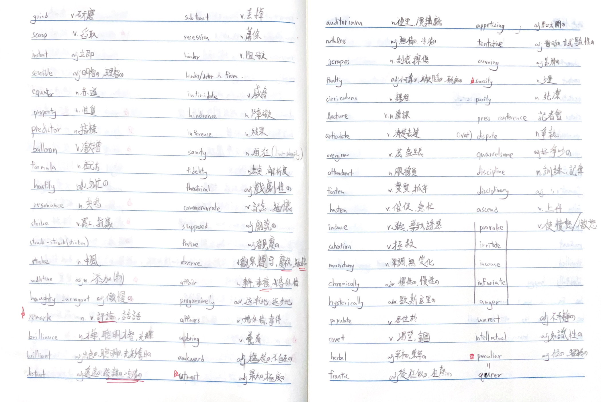
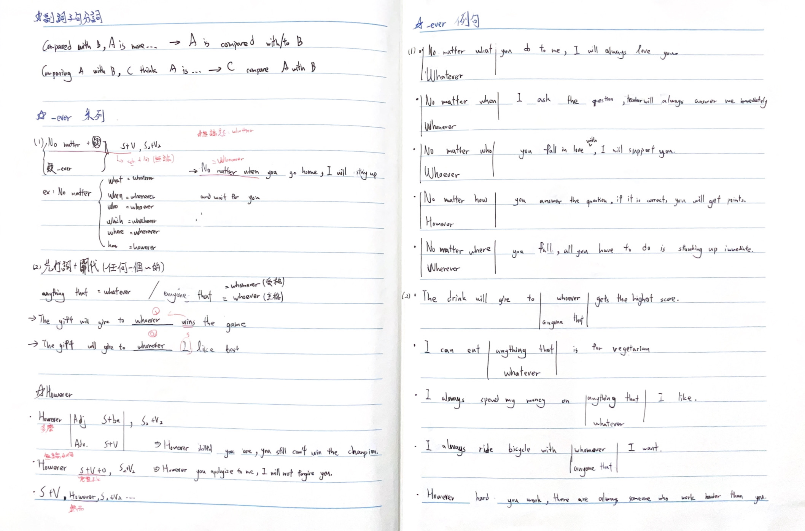
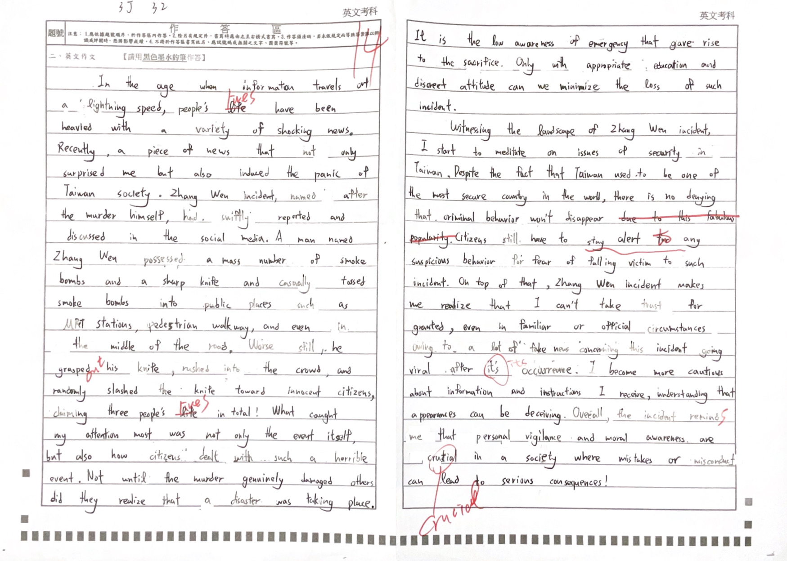
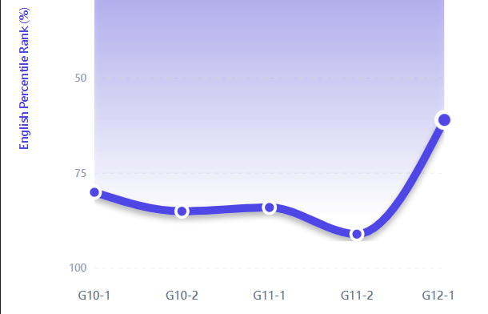
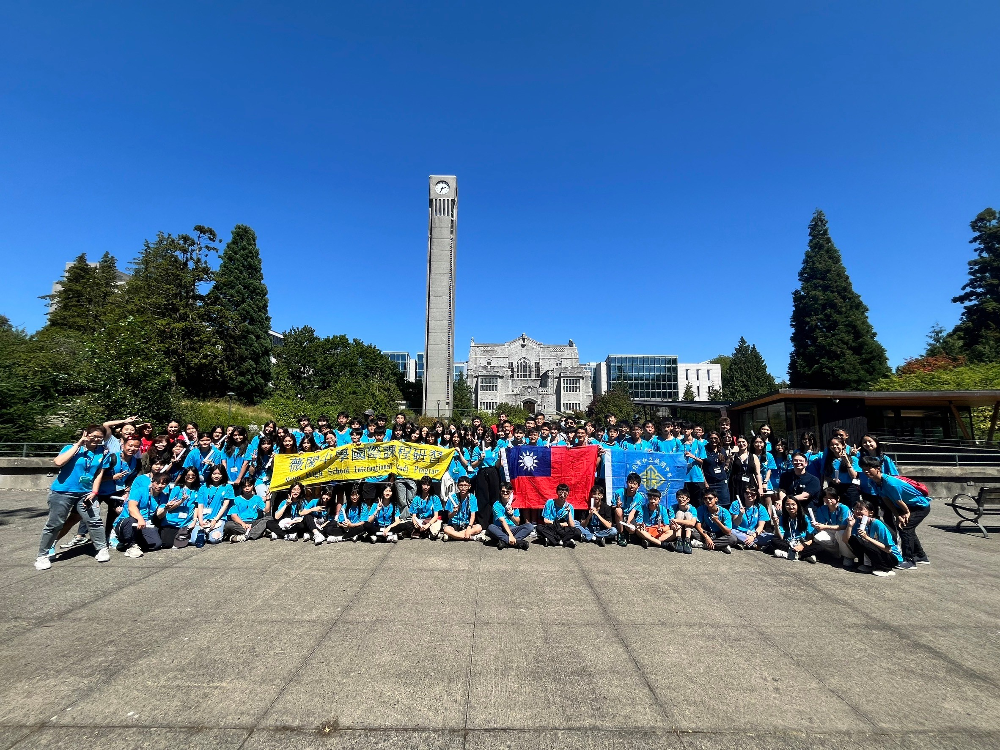
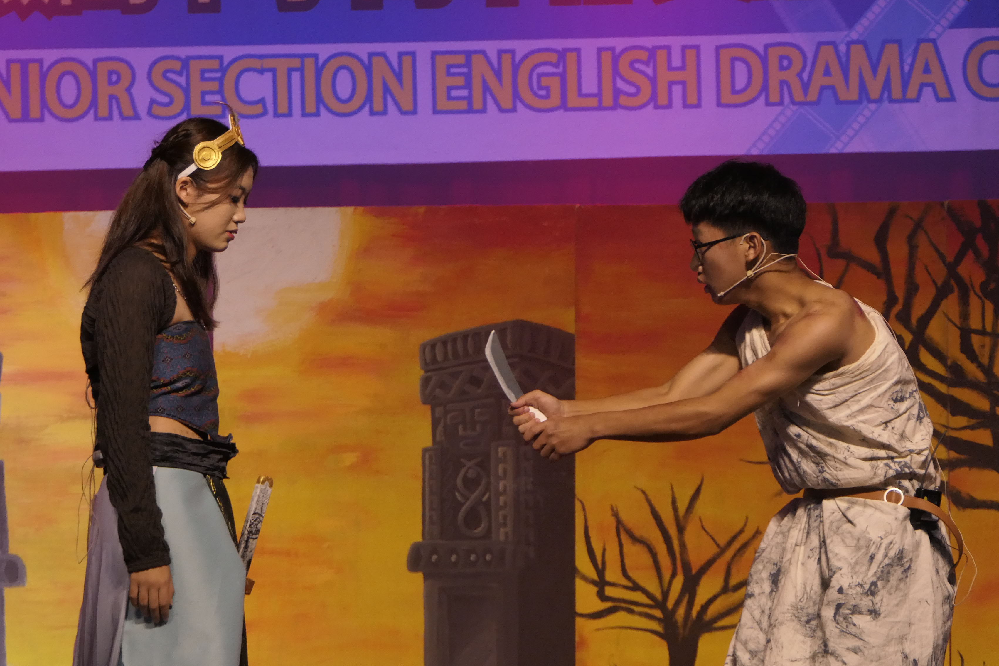

學習動機與初衷
克服弱點
英文曾是我最弱的科目，但我決定正面迎接挑戰，將它轉化為我的強項。
國際競爭力
英文是通往國際社會的橋樑，卓越的語言能力是接軌世界的必備工具。
文化熱忱
對英語電影、音樂與文學的熱愛，讓我渴望用不同視角看世界。
校內課程：建立紮實的基礎
透過系統化的練習，我逐步建立起屬於自己的語言學習節奏。

單字與片語練習
面對起初不理想的成績，我採取「單字量突破」策略。從基礎 1000+ 單字開始，不只是背誦，更強調在語境中的實際運用。

文法與翻譯練習
透過系統化的文法筆記歸納與中英翻譯實作，我掌握了精準表達的關鍵。將破碎的語感轉化為邏輯清晰的句型結構。

小日記與作文練習
每日堅持進行英文短文寫作，將生活點滴轉化為英語思維。這種持續性的練習，讓我在考場上能更流暢、更有自信地完成創作。
看見成長的數據
這是我高一上至高三上期間的英文 PR 值變化。每一次的努力都體現在這條上升的曲線中。

課外拓展：勇敢跨出舒適圈
UBC國際交流計畫
參與加拿大 UBC 的英語課程是我人生中的轉折點。在純英語環境中，我不再只是紙上談兵，而是學會了如何跨越文化隔閡。


英語話劇比賽：挑戰舞台主角
從一開始的怯場到第二次參賽勇於擔任主角。磨練了我的發音與領導力。
「這次經驗教會我如何在壓力下領導團隊，這份自信比任何獎項都更為寶貴。」
自我省思與未來展望
「英文不僅是一個成績，它更是一把打開世界大門的鑰匙。我學會了從錯誤中成長，勇敢面對對英語的恐懼。」
核心成長點
將恐懼與猶豫成功轉化為行動的勇氣。
建立自主學習習慣，讓語言成為終身使用的工具。